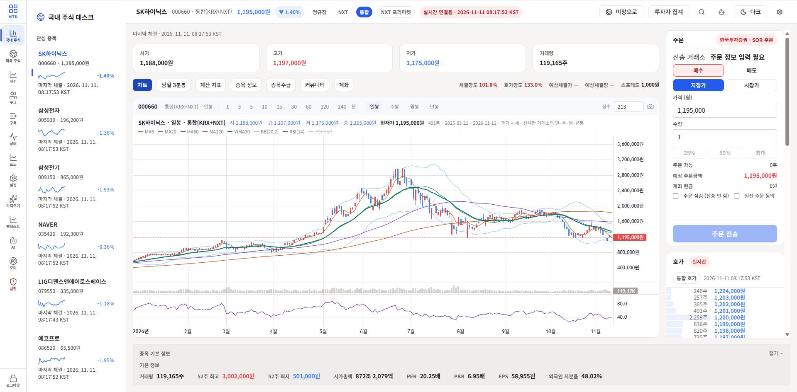
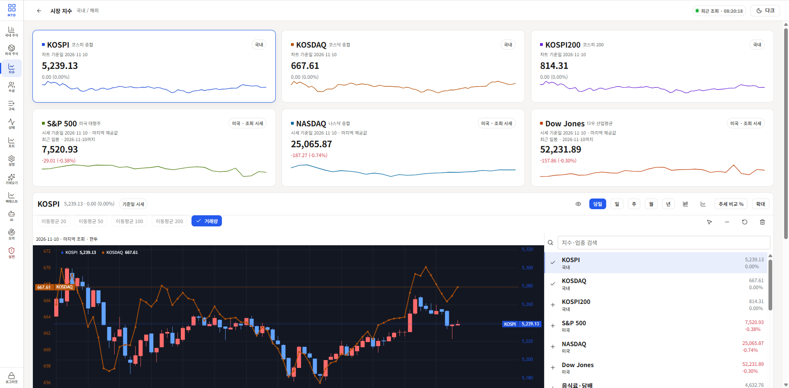
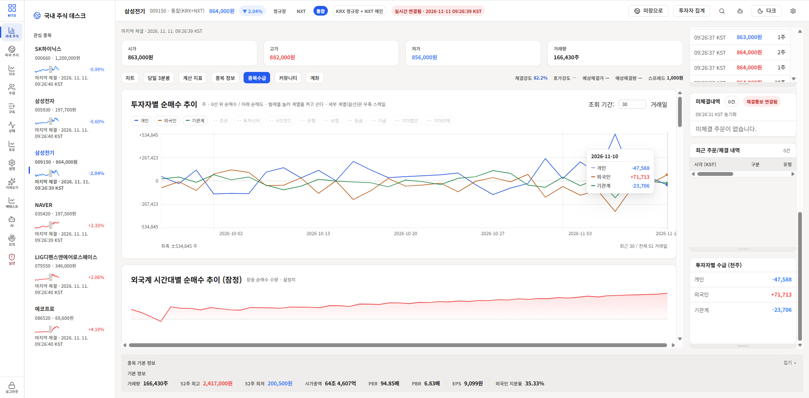
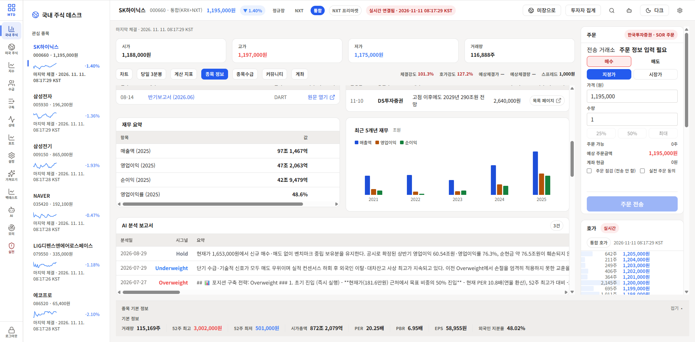
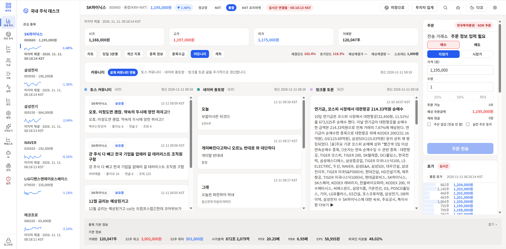

증권사별 응답 통합
KIS·키움·LS·토스용 API 클라이언트를 연결하고 증권사마다 다른 응답을 같은 화면에서 쓸 수 있는 형태로 정리했습니다. 증권사 인증, 요청·응답 처리와 API 중계를 맡는 계층을 나눴습니다.
API INTEGRATION · REALTIME
좁은 MTS 화면과 외부 PC마다 HTS를 설치해야 하는 불편에서 시작했습니다.
브라우저에서 시세를 보고, 정보를 모으고, 실제 주식 주문까지 처리하는 웹 트레이딩 시스템을 만들었습니다.
주식 정보를 넓은 화면에서 보고 싶었지만, 외부에서 사용하는 PC마다 HTS를 설치하기는 어려웠습니다. 내가 자주 보는 정보와 주문 기능을 브라우저 한 화면에 모으기로 했습니다.
차트와 보조지표, 실시간 호가, 종목별 수급·재무정보, 계좌 조회와 실제 주문을 구현했습니다. 관심 종목을 살펴보면서 분석과 주문에 필요한 정보를 같은 화면에서 확인할 수 있습니다.

시장 흐름
KOSPI·KOSDAQ부터 S&P 500·NASDAQ·Dow Jones까지 주요 지수를 모았습니다. 지수별 흐름을 확인하고 차트에 여러 지수를 겹쳐 비교할 수 있게 했습니다.

종목 수급
개인·외국인·기관계의 순매수 추이를 비교하고, 외국계 시간대별 순매수 잠정치를 함께 확인합니다. 조회 기간과 표시할 투자자 구분을 바꾸며 수급 흐름을 살펴볼 수 있게 했습니다.

종목 분석
종목별 자료를 수집·파싱한 뒤 LLM에 전달해 단기 스윙 관점의 분석 보고서를 작성하도록 했습니다. 재무 요약과 최근 5개년 실적, 공시·증권사 자료, AI 분석 이력을 종목 화면에서 함께 확인합니다. 분석 보고서에는 TradingAgents를 활용했습니다.

정보 수집
각종 커뮤니티의 최신 글과 관련 뉴스를 수집해 종목 화면에서 바로 읽거나 원문으로 이동할 수 있게 했습니다. 여러 사이트를 오가며 찾던 정보를 한 페이지에 모았습니다.

2026년 11월 11일 실행 화면입니다. 차트와 수치는 캡처 당시 표시 내용입니다.
KIS·키움·LS·토스용 API 클라이언트를 연결하고 증권사마다 다른 응답을 같은 화면에서 쓸 수 있는 형태로 정리했습니다. 증권사 인증, 요청·응답 처리와 API 중계를 맡는 계층을 나눴습니다.
REST 요청과 WebSocket 구독을 함께 사용해 시세·호가를 수신하고 화면을 갱신합니다. 실제 주식 주문을 다루면서 프로젝트 보안과 인증정보 관리, 실시간 정보 송수신을 함께 고려하는 경험을 쌓았습니다.
자동매매 조건을 YAML로 정의하고 전략에서 참조할 지표를 구현했습니다. 화면에서 전략 조건을 편집하고 저장한 뒤, 과거 데이터로 모의시험할 수 있도록 Backtest와 연결했습니다.
실주문을 개발하면서 개장일과 개장시간 확인이 최소한의 안전장치에 필요하다는 점을 발견했습니다. 이 요구를 별도 서비스인 Market Calendar로 발전시켰습니다.
Market Calendar 개발 사례 ↗구현 결과
조회·분석·주문을 연결한 나만의 거래 화면
차트와 종목정보, 커뮤니티·뉴스, AI 분석, 전략 편집을 한 웹 환경에 모았습니다. 여러 증권사의 API를 통합하고 실시간 데이터를 다루는 경험을 실제 사용하는 서비스로 이어갔습니다.
만든 전략을 실제 주문에 적용하기 전에 과거 구간에서 어떻게 동작하는지 확인할 필요가 있었습니다. 종목별 데이터를 준비하고 전략을 실행하는 과정을 웹에서 이어서 처리하도록 만들었습니다.
국내·미국 주식의 개별 종목 과거 데이터를 증권사에서 손쉽게 내려받고 모의 전략 테스트를 실행할 수 있습니다. 조건을 바꾸며 결과 차트와 평가 지표를 확인하는 환경을 마련했습니다.
국내·미국 종목의 과거 데이터를 증권사에서 받아 전략 시험에 사용합니다.
전략 조건과 입력값을 확인하고 백테스트를 별도 작업으로 실행합니다. 진행 상태도 함께 표시합니다.
결과를 읽어 자산 가치 변화와 평가 지표를 보여줍니다. 전략 조건을 바꿔 다시 시험할 수 있습니다.
백테스트는 QuantConnect Lean으로 실행합니다. 웹에서 입력한 전략을 Docker에서 실행하고 결과를 화면으로 가져오도록 연결했습니다.
| 구성 | 언어 | 프레임워크·라이브러리 | 역할 |
|---|---|---|---|
| 웹 화면 | TypeScript | Next.js · React · Tailwind CSS · Lightweight Charts | 시세·주문·종목정보, 차트, 전략 편집 |
| API 중계 | Go | Fiber | 증권사 요청·응답 처리 |
| 실시간 처리 | Rust | Axum · Tokio | 실시간 데이터 수신·전달 |
| 자료·작업 API | Python | FastAPI | 자료 취합, 작업 실행과 결과 조회 |
FolioTrace는 공시에 나온 보유 내역을, Market Calendar는 거래소가 발표한 휴장일과 거래시간을 보여줍니다.